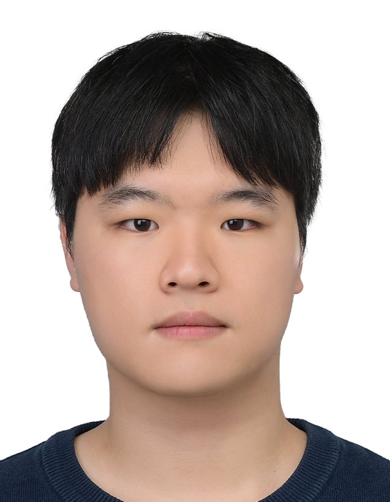

JLJunseo Lee 이준서
Department of Naval Architecture and Ocean Engineering,
Seoul National University
- Education
- B.S. in Naval Architecture and Ocean Engineering, SNU
Mar. 2022 – Feb. 2028 (expected) - Currently
- Undergraduate Intern, OST Lab., SNU
- Interests
About
My research interests lie at the intersection of machine learning and engineering, with a focus on integrating physical principles and domain knowledge to support reliable analysis, interpretable predictions, and informed design decisions. I am particularly interested in self-supervised learning of 3D geometric representations for maritime perception that is robust to partial observations, viewpoint changes, and limited real-world data. I also seek to explore simulation-informed learning and multi-fidelity modeling for structural analysis and optimization, balancing computational efficiency with physical understanding and engineering constraints.
Explore
Highlights
-
Oct. 2026
Selected as a 2026 ABS Scholar
American Bureau of Shipping (ABS)
-
Sep. 2026
2nd Prize, Ocean Engineering CAE Contest (KSOE)
Team leader · LLM-based midship optimisation software
-
Aug. 2026
Joined OST Lab., Seoul National University
Undergraduate Intern · Advisor: Prof. Dokyun Kim
-
Jul. 2026
Poster presentation at UR 2026, Osaka
Maritime vessel re-identification under partial observations
-
Feb. 2026
Poster presentation at KROS 2026, PyeongChang
LiDAR-based marine vessel re-identification (CIEF-Net)